1. 导论
ChatGPT的出现和“爆火”，让大家见识了大型语言模型(Large Language Models，下文均简称LLM)的威力，尤其是千亿模型已经远超BERT时代的认知，甚至看到了AGI（Artificial General Intelligence，通用人工智能）的可能性。但随之而来的机遇和挑战并存。除了遥遥领先的OpenAI，业界大部分公司或多或少被拉到了追赶ChatGPT的同一起跑线上。
本文延续上篇文章（ChatGPT技术解构与思考）末尾对于ChatGPT如何使用的话题，基于最近阅读的一些材料和学习，结合从组内做过的实验中得到的认知，拓展到更广范围的LLM，集中阐述如何使用、适配和挖掘LLM的能力，并给出相关思考供大家讨论。
2. 综述
通过海量数据训练得到的超大参数模型蕴含了海量知识，以GPT3（175B）开端，再到LaMDA（137B）、Gopher（280B）、FLAN-T5（540B）等，业界对于LLM的探索和应用，以及如何挖掘其学到的知识，引导它们适配不同子任务达到最先进结果（state-of-the-art result，sota），一直是近两年一项极具价值及热门的工作。
emsp; 对于LLM的探索，从起初探索贴近预训练任务的方式构造下游任务，包括各类Prompt Engineering方式，减少微调数据量；再到用非梯度更新的方式，使大模型无需微调情况下，拥有小样本、零样本解决问题的能力，包括上下文学习（In-context learning）、上下文学习的矫正（Calibration）等；利用LLM解决更难的数理推理问题，通过一系列逻辑链(CoT，chain of thought )，深入挖掘大模型的知识和推理能力；进一步，更加看重行动驱动（Action-driven）、意图驱动与大模型的结合，使大模型从意图出发对齐人类需求；以上探索，力求在数量繁多的自然语言任务中达到初步的“质变”效果，尝试通向真正的AGI。
在讨论如何使用LLM之前，首先需要明确我们为何要发展这样的技术，我们的机会在哪？进而才能讨论我们如何发展和适应这些技术？最后我们需要思考LLM这项技术会给我们带来什么，机遇和挑战是什么？
3. 我们为何要发展这样的技术？我们还有机会么？
基于大模型本身蕴含的海量知识，大型语言模型有机会使得以文本为主的业务得到“质变“的提升；再次以最近过于火热的ChatGPT为例，其基于GPT3.5模型，其超强的对话能力、意图理解以及对齐能力，对类似的ChatBot和文本生成等任务具有颠覆性；而这样的“Emergent abilities”，无论作为流量入口，或者模型升级有效赋能到各项业务，使业务在智能化和“懂”用户层面上得到“跃升”，是非常有前景和激动人心的。
那么如果我们要做自己的ChatGPT/LLM，还有多远的距离？如果用时间来衡量大约是两年的时间，计算的起点是GPT3的出现，基于的假设是我们现有可用的最强模型Bloom/OPT-IML已达到GPT3能力（数据集指标可以对齐，但整体感受层面尚有差距）；同时，这两年多时间包含着数位高级研究者智力、数百台机器数千张GPU的长期探索。通过参考文献1中提到下面表1看的更清楚，GPT3到现有的ChatGPT，大致有5~6次里程碑的演化。
| 能力 | OpenAI模型 | 训练方法 | OpenAI API | OpenAI论文 | 近似的开源模型 |
|---|---|---|---|---|---|
| GPT3系列 | |||||
| 语言生成 + 世界知识 + 上下文学习 |
GPT-3初始版本 大部分的能力已经存在于模型中，尽管表面上看起来很弱。 |
语言建模 | Davinci | GPT3论文 | Meta OPT |
| + 遵循人类的指令 + 泛化到没有见过的任务 |
Instruct-GPT初始版本 | 指令微调 | Davinci-Instruct-Beta | Instruct-GPT论文 | T0论文 Google FLAN论文 |
| + 代码理解 + 代码生成 |
Codex初始版本 | 在代码上进行训练 | Code-Cushman-001 | Codex论文 | Salesforce CodeGen |
| GPT3.5系列 | |||||
| ++ 代码理解 ++ 代码生成 ++ 复杂推理 / 思维链 + 长距离的依赖 (很可能) |
现在的Codex GPT3.5系列中最强大的模型 |
在代码+文本上进行训练 在指令上进行微调 |
Code-Davinci-002 (目前免费的版本 = 2022年12月) |
Codex论文 | |
| ++ 遵循人类指令 - 上下文学习 - 推理能力 ++ 零样本生成 |
有监督的Instruct-GPT 通过牺牲上下文学习换取零样本生成的能力 |
监督学习版的指令微调** | Text-Davinci-002 | InsructGPT论文 有监督部分 | T0论文 Google FLAN论文 |
| + 遵循人类价值观 + 包含更多细节的生成 + 上下文学习 + 零样本生成 |
经过RLHF训练的Instruct-GPT **和002模型相比，和人类更加对齐，并且更少的性能损失 |
强化学习版的指令微调** | Text-Davinci-003 | InsructGPT论文 从人类反馈中学习 | Deepmind Sparrow AI2 RL4LMs |
| ++ 遵循人类价值观 ++ 包含更多细节的生成 ++ 拒绝知识范围外的问题 ++ 建模对话历史的能力 — 上下文学习 |
ChatGPT 通过牺牲上下文学习的能力换取建模对话历史的能力 |
使用对话数据进行强化学习指令微调** | Deepmind Sparrow AI2 RL4LMs |
那么我们还有机会么？答案当然是有，并可以在不同组织层面以不同身位入场。LLM的引入会使行业内公司划分出不同层级（此处很同意谢剑的观点，主要化用其结论，详细内容参见参考文献7)
1） Level1：LLM基础设施公司；类比为一个拥有比较强通用能力的人；Level1的公司会比较少，可能只有1-2家（比如 OpenAI、Google）
2） Level2：基于LLM结合场景进行商业化应用的公司(以应用为主，没有全体微调) ；类比通用能力的人去一些场景打工挣钱；Level2的公司侧重于基于LLM做出较多应用，包括从头创新做应用、已有的业务场景中升级功能。
3） Level3：基于LLM+领域场景数据，微调形成具备更强领域能力和一定门槛的产品，通过商业化和数据积累，持续形成业务数据-模型闭环；类比一个领域专家。Level3的公司有很强的专业性和数据积累，比如类似专项面向写作的Jasper.AI等。
我们在LLM层级以如何的身位入场，是个值得大家思考和讨论的问题。而对于不同Level对于个人研究者的发展层级，也可以从以上3个层级对应角色和工作，具体也可参照以上链接。
4. 我们如何适应LLM技术：使用方式
4.1 预训练
发展LLM技术最直接的方式一定是从头预训练（pretrain from scratch），它可以按照不同需求量身定制做预训练，这样的方式对于训练千亿级别的模型，核心问题是老生常谈的成本问题。2年半前的GPT-3预计训练成本接近 500 万美元，此条路径适合专业的、大组织形式内的整体战略和输出，对于小规模研究组/项目组并不合适。
4.2 微调
基于已有的LLM，适配到下游任务最直接的方式是微调，也是ChatGPT第一阶段训练方式。对于较大组织，在LLM基础上做二阶段预训练/微调是一条可行之道；但对于业务方向来说，直接微调千亿模型的消耗成本也过高，需要探索提升训练效率、减少训练参数量。而基于以上诉求，业界逐渐产生了多种局部微调/无需微调使用LLM的方法。
4.3 基于Prompt的微调（Prompt-based Finetune）
第一类是Prompt-based方法，它是较早应用于普通预训练模型的方法，在文本理解(NLU)层级使用较多，其核心思想是增强预训练任务和下游任务的一致性，保证这样的一致性，可以让预训练模型在样本较少的情境下效果超越微调；同时当模型效果接近全数据微调时，所需标注数据量也大大减少，尤其对一些较简单的分类任务效果明显。
Prompt-based 以PET和LM-BFF为代表；
1）PET（Pattern-Exploiting Training）
PET方法示意图见图1，即将标签模板化，预测[MASK]位置label的概率。
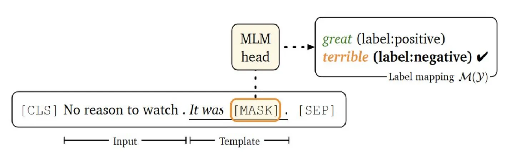
2）LM-BFF（better few-shot fine-tuning of language models） LM-BFF聚焦于如何得到更好的Prompt，其探索了自动Prompt的选择和构造，以表2为例，在NLI任务中不同的Prompt对于下游任务的准确率影响较大。 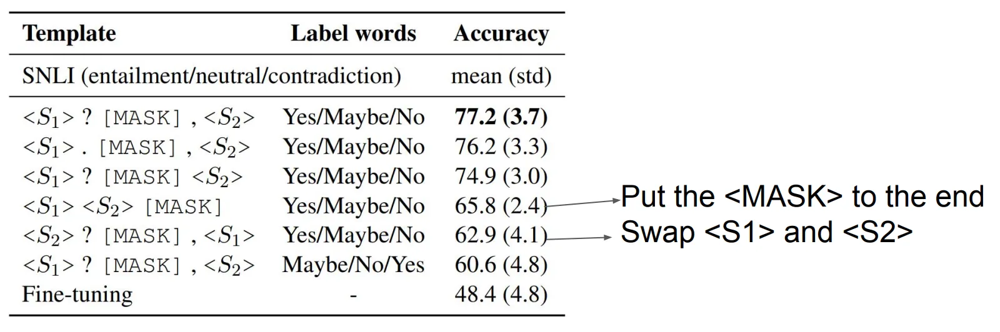
LM-BFF在不同任务的小样本学习效果超出等量数据下的微调，但整体结果不够稳定，方差较大，对人工模板的依赖也较大。
之后很多的工作聚焦于如何设计得到更好的Prompt，降低这样的不稳定性，包括对于标签、模板和Prompt整体的搜寻、设计；同时业界也通过更多办法包括挖掘（Mining）、重写(Paraphrasing)、生成(Generation)等方式，来提升Prompt的多样性和稳定性，提升基于Prompt微调的效果；还有其余工作不局限在离散的自然语言的模板，比如P-tuning方法。
我们利用Prompt-based方法主要聚焦在分类问题上，分类问题情境一般较简单，使用PET标注量只需原先的1/10（500 vs 5000）。
4.4 参数有效的Prompt调整(Parameter-efficient Prompt Tuning)
所谓Parameter-efficient（参数有效），即无需针对每个任务微调一个全参数的模型，只需调整LLM的部分参数，下游任务即可达到较好效果，该方法极大降低训练/存储成本。
Parameter-efficient Tuning核心的关键是如何选择有效微调的参数？选择哪部分参数微调？这部分参数占比多少？
1）Adapter Finetune
此方法在Transformers中添加 Adapter Layers，微调过程中只调整此部分参数。Adapter为图3中，在FFN和Norm layer层之间添加的”Adapter”部分，其构成是两层FFN，只需微调3.6% Adapter的参数，在下游任务效果接近全量微调。
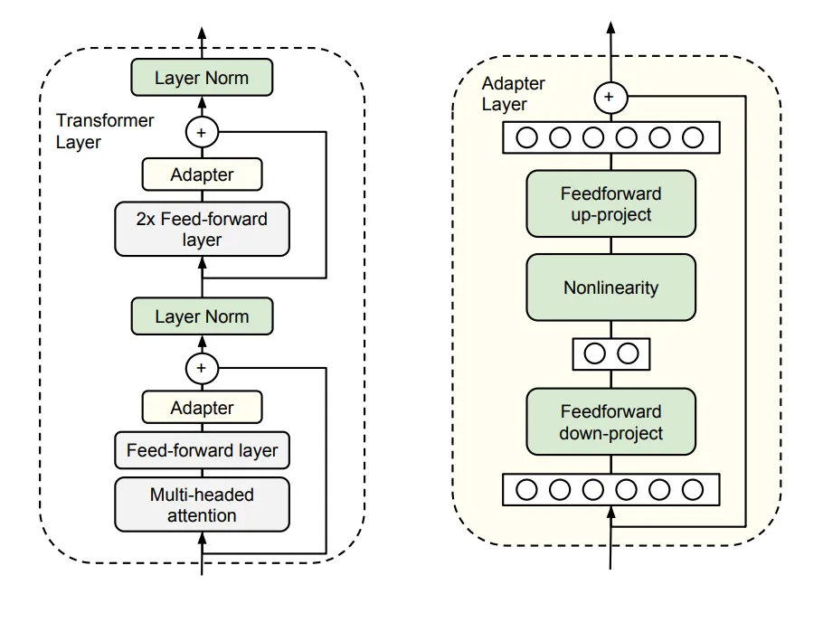
2） Prefix-tuning
Prefix-tuning是第一部分Prompt-based微调的发展和延伸，核心思想是选取与子任务强相关的Prompt参数连续化微调，同时固定其他部分参数；该方法优点是无需人工设计模板，可以参数化自动学习模板统一优化；缺点也很明显，相比文字模板解释性较低。
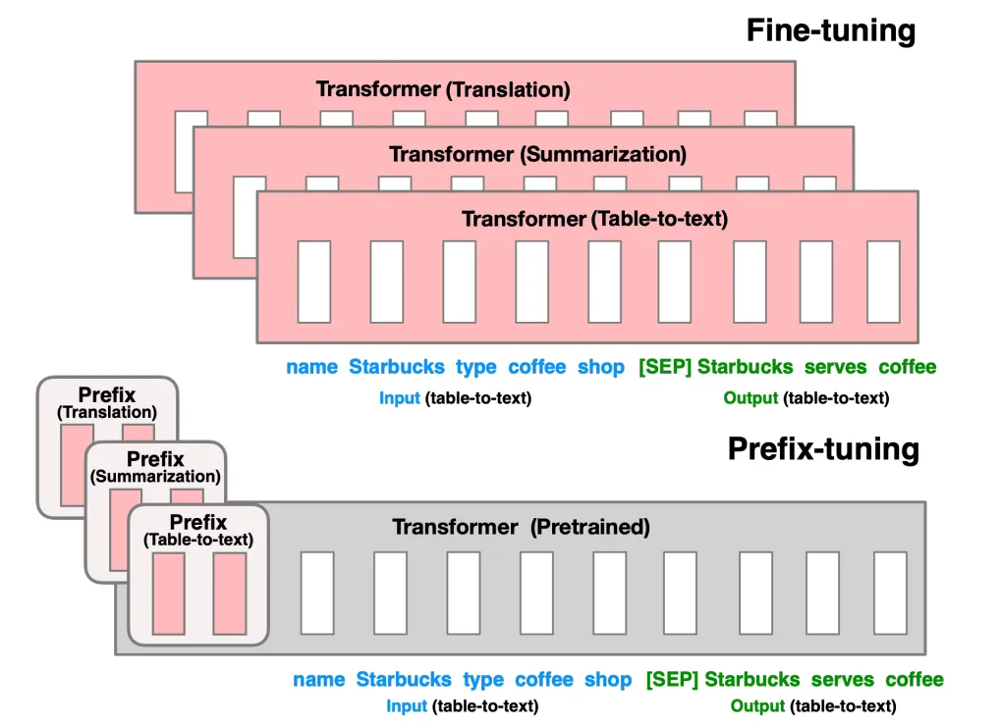
Prefix-tuning的离散模板添加在**每层hidden state**前，与其他同为离散化模板方法的P-tuning不同，后者只需维持输入前缀的离散化，无需隐层状态中维持。Prefix-tuning所需调整参数比率为0.1%，同时在table2text、翻译、摘要3个生成任务上，效果超出其他小样本调整方式，甚至效果基本接近整体微调。
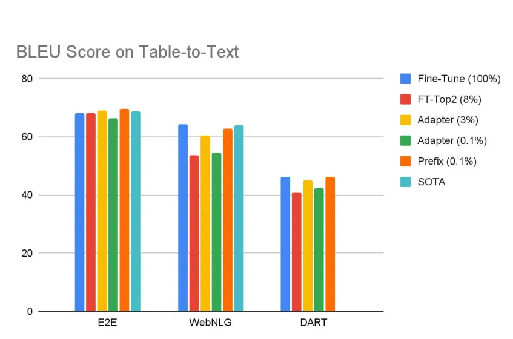
我们利用Prefix-Tuning，主要在小样本的结构化生成任务中有过尝试，但生成效果一般，没有得到论文中的结果，且相比微调的稳定性稍差；可能是因为迁移到中文的影响，抑或没有选取到合适的参数；但其选取部分hidden-state的微调思想很有借鉴意义，也说明在相对垂直的一些任务上，无需很大参数量，局部微调就可达成目标，LLM的参数在这些任务上是**过分冗余**的。 3) Prompt tuning Prompt tuning 可以看做Prefix-tuning的特殊形式，Google提出的Prompt tuning是做了全面系统的多实验参数的精调，来梳理清晰Prompt tuning的影响因素。此处的结论很有意思： ● Prompt长度：当模型参数<10亿时，整体倾向是：随着长度变长，模型效果持续上升，在长度为20时即达到峰值；但当模型规模超过10亿时，长度影响差距缩小，特别长度为1时效果也尚可。 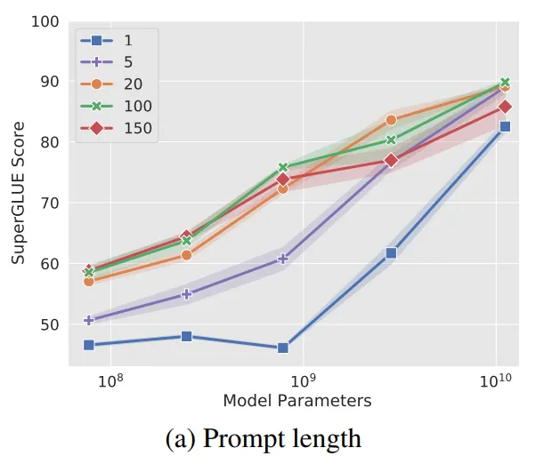
● Prompt初始化方法：当模型参数<10亿时，初始化时，使用分类标签的embeddings与随机选取词表中词的embeddings作初始化，效果相比完全随机初始化好很多，且后者极不稳定；但当模型参数大于10亿后，选取何种方法初始化**不再重要**。
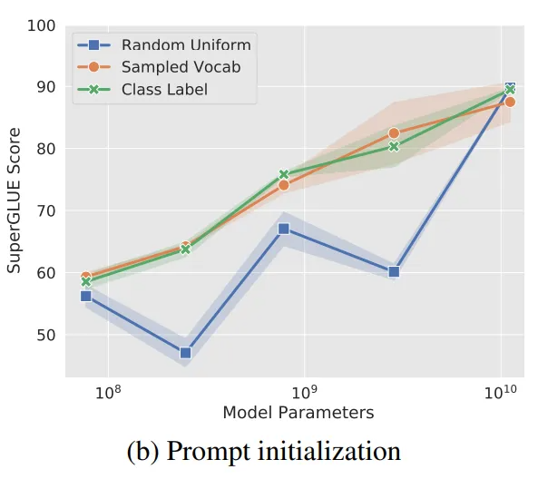
● Prompt预训练方法：LM Adapation效果稳定，随着模型参数上升稳步增长，另外两种方式极其不稳定；但神奇的是，当模型同样达到10亿量级后，模型效果均趋向良好。
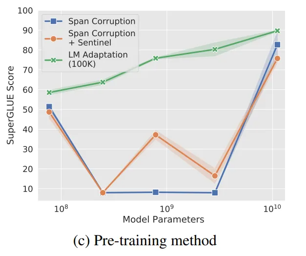
● 训练步数：在普通量级参数量下，步数越多效果越好，但当模型量级达到10亿后，模型零样本/小样本能力凸显，无需过多步数训练。
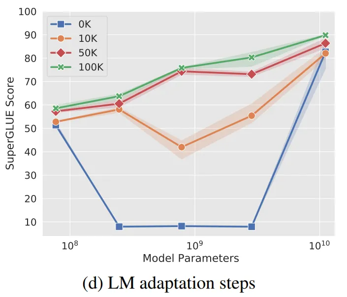
以上实验可以看出，在Prompt tuning上模型**规模的力量**（the power of scale）。当模型参数达到一定量级后，无效的模型设计对结果影响不大；模型开始“返璞归真”，暴力美学尽显，这与对话模型PLATO异曲同工：PLATO-1和PLATO-2一顿操作设计猛如虎，但PLATO-XL只用最简单的Transformers结构，只在数据量和参数量大幅增加后即呈碾压之势。 相关工作还有Prompt tuning的升级工作，包括模板融合等。此部分我们没有做过多的参数实验，只在相同模型（1亿内量级）下做过一些Prompt的修改，但影响整体不大。 ### 4.5 上下文学习（In-context Learning） 上下文学习主要在GPT3发布后，开始引发业界关注并逐渐流行；它无需在大模型上进行梯度更新，无需任何形式参数的微调，只需少量下游任务的任务描述和输入输出示例（甚至完全零样本学习），即可在下游任务上取得不错的效果；当选取最大的1750亿参数的模型时，部分任务上甚至超过出SOTA，如在LAMBADA（开放式完形填空任务任务）上提升了18%；图10很好的说明了In-context Learning与传统微调的区别。 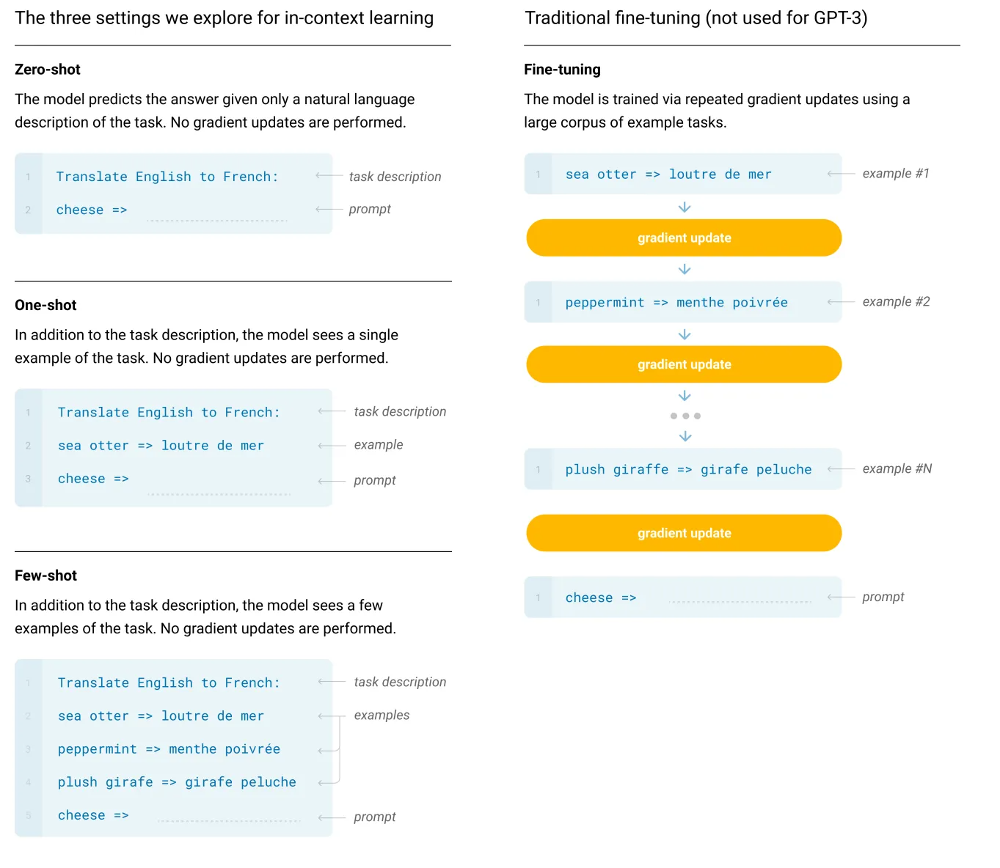
1）基础In-context learning
In-context learning主要由以下四个部分组成：Distribution of inputs、Label space、Format、Input-label mapping，图11清晰的阐述可该组成结构。
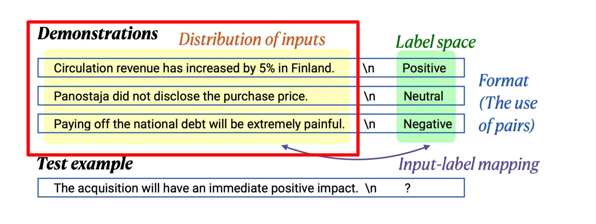
显然In-context learning的优化就从以上四个方面着手设计和探索。
● Distribution of inputs即为原始文本输入
对于输入样本的选择和顺序均会影响In-context learning的效果。前者同小样本学习的样本选择类似，需要选择有代表性、分布均匀的样本，拿分类问题举例，尽可能提供包含不同类别不同的分布；后者是指不同样本的顺序会影响效果，在参考文献2中有阐述，在SST-2（单句情感分类任务）判断任务中，不同排列顺序的输入会导致较大浮动范围的指标。
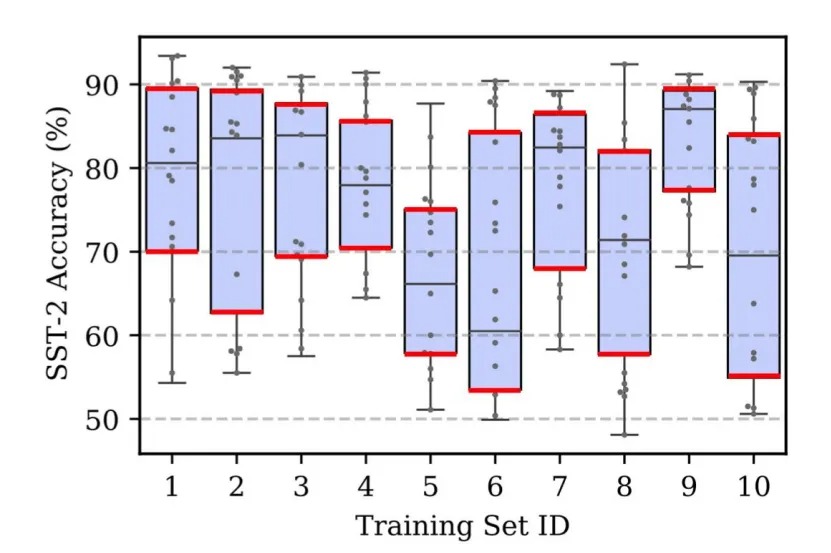
● Lable space即为标签的定义和分布； Label space相关的课题主要是研究label空间的重要性，但整体的结论对模型训练影响不大，提供正确label词即可。 ● Format即Demonstration的格式 对于Format的研究，意图寻求最好的Format，比如面向复杂推理问题的CoT（逻辑链推到，下文会介绍）便是一种对于合适Format的探索；Format在In-context learning中很重要，格式是否相同、格式是否统一，均会对模型表现有加大的影响。 ● Input-label mapping可以理解为得到标签的计算方式 传统计算方式为计算下一个词的条件概率，也可计算整句PPL概率； 针对In-context Learning一种较好的方式是**Channel函数**，它主要面向不平衡标签数据，通过反向计算，即给定标签计算输入概率，选择最大概率来得到最后的标签。它主要防止当标签不平衡时，引起label预测不平衡。 在我们的实际工作基于百亿/千亿模型的数据扩增中，In-context learning起到了主要作用；在人工精标少量分布均匀的种子数据后，通过设计In-context learning的示例，可以快速扩增训练数据，进而供下游任务使用。 2）In-context learning的校准（Calibration） 在上文提到，不同样本Demonstrations的顺序效果浮动超出可控范围；实际场景中，除了上文的影响，存在**多类bias**会影响语言模型本身的倾向，以下三种bias影响模型结果： ● **标签分布bias**；当Demonstrations中标签不平衡时，语言模型倾向于预测**占多数**的标签； ● **词频bias**；当存在两类标签A和B，但B为一个低频词时，此时模型大概率倾向于预测**词频高**的A标签； ● **就近bias**；即模型会易受最新见到的标签影响，如样本标签顺序为PNNPP，预测**就近的**P的概率会较大。 以上客观存在的bias，需要在In-context learning中做校准（Calibration），主体方法是得到bias的概率分布后，如P(Pos)=0.65，P(Neg)=0.35，使用校准矩阵W校准，W为概率倒数形成的矩阵，其他bias的矫正思想也类似。

In-context learning从出现到兴起，其有效性的由来完全黑盒。也有工作开始尝试进行解释，此篇文献尝试从贝叶斯推理的角度进行解释：An Explanation of In-context Learning as Implicit Bayesian Inference ，有兴趣的同学可以深入研究。 ### 4.6 推理 在上一节中，我们提到了在Demonstration 构造中，有一类是面向**困难的**数理逻辑任务的CoT（Chain of Thought）Prompting，它主要面向较困难的知识推理、数理推理任务，因为对于此类任务，单纯提升模型收效甚微，需要研究通过其他手段来挖掘LLM在推理任务的能力。 CoT提供给模型一系列中间的自然语言推理步骤，类似于人类演算的过程，进而得到最终的输出，使得模型不仅要知其然，且要知其所以然；图14是CoT的输入形式。 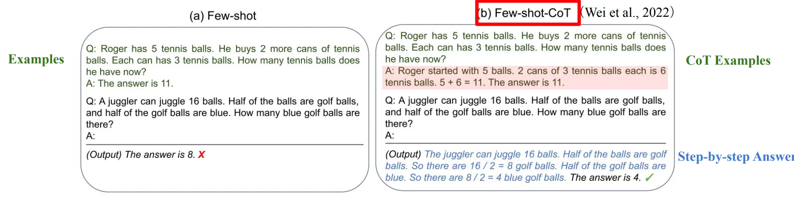
1）Emergent Abilities
对于更困难问题的有效解决，开始让LLM变得“智能化”；同时，在CoT的研究过程中，研究者们发现了一项神奇的能力 —— Emergent Abilities（涌现能力）。Emergent Abilities是超出scaling law的，当模型达到千亿时，模型效果突然“跃升”，在图15中可以明显看到。
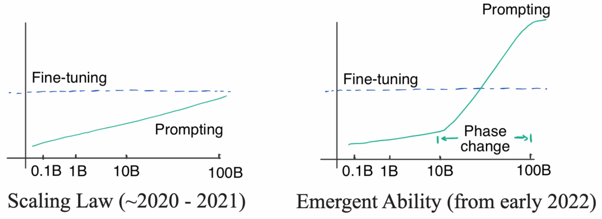
而Emergent Abilities只存在于超大规模模型中，且不是所有的大参数模型均存在，甚至连1370亿参数量的LaMDA模型也没有这样的能力，如图16所示；在我们的实验和外部文献中，1750亿的Bloom暂时也未发现此项能力。
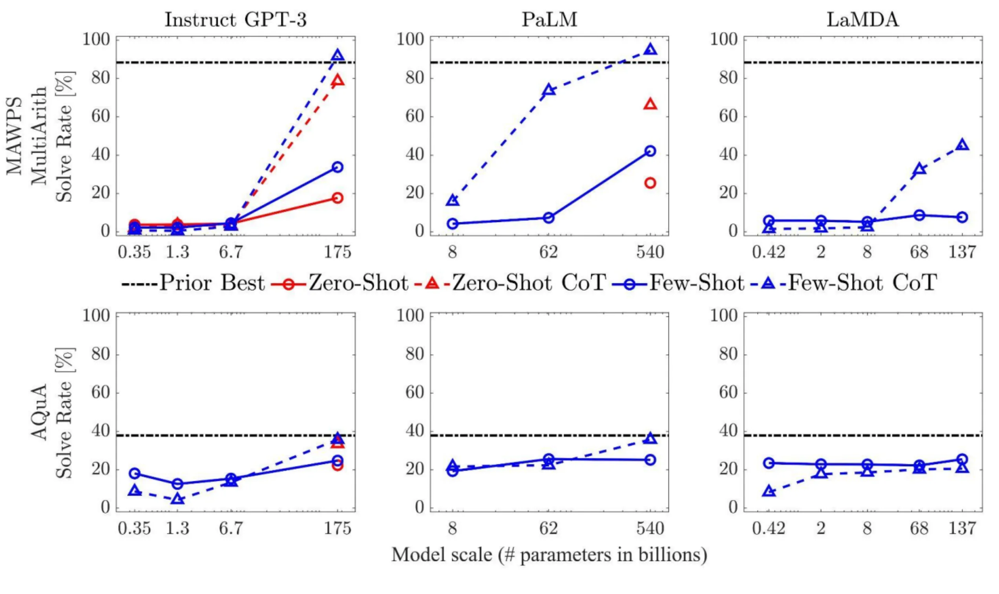
关于Emergent Abilities 的介绍和剖析，推荐参考文献3的blog。阅读后你会深刻理解Emergent Abilities 出现为何激动仁心，其对于复杂推理、知识推理和超强的集外泛化能力，均会为你开启“新”的世界。
此项能力的出现还需要进一步探索，目前证实存在这种强推理能力的，只有GPT-3.5系列包括text-davinci-002(InstructGPT) 和code-davinci-002 (Codex) 以及在其基础上的演进模型（比如ChatGPT）；另外结合指令学习的PALM模型系列也有此项能力。
Yao Fu合理推测千亿模型要存在Emergent Abilities 大致有三要素：
● 指令学习：InstructGPT（GPT-3 text-davinci-002）和PaLM均有此任务设置；
● 代码微调：Codex和PaLM均在代码上有过微调；
● CoT微调：进行CoT数据微调后，LLM倾向于拥有Emergent Abilities。
2）Reasoning with prompting研究命题
回到CoT Prompt本身的讨论，我们可以从表3中得出业界对于此方向的研究命题，包括Prompt 工程设计、推理过程的优化、外源引擎（主要指代码引擎）以及知识增强（内外源知识）。
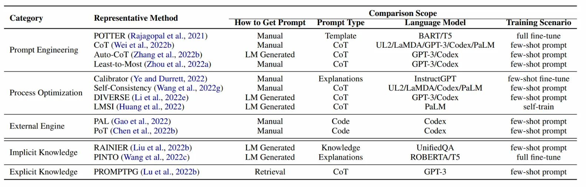
对Reasoning with LLM 的研究感兴趣的同学具体可以参考文献5，表2也从此文中而来。
另外，其他对于LLM的使用，还包括对于其知识的存储机制、挖掘和利用的工作，研究者们将LLM作为一个知识库进行知识挖掘，或者探索LLM中知识的热更新，但总体这部分应用不够，且限制较多（受schema限制），此处不作详细阐述。
以上对于LLM使用方式的分类和总体脉络，参照Danqi Chen的COS 597G (Fall 2022): Understanding Large Language Models课程，路径见参考文献6；对LLM感兴趣的同学，强烈推荐此门课程的课件学习和相关paper阅读，当然遗憾的是没有看到课程相关video，如果有可以找到的同学欢迎分享。
5. LLM的机遇与挑战
LLM的出现使得机遇与挑战并存，机遇在于技术革新势必会带来新赛道的机遇，挑战在于革新也会使越来越多old school方式被抛弃，跟不上节奏落伍的风险将会加大。
1） 从技术演进角度来说，LLM可能使NLP形成“大一统”之势。如果说BERT让大部分中间任务基本消亡，NLP传统技艺逐渐被替代，那么LLM则会让很多NLP子领域不再具备独立研究价值，它们均会被纳入LLM技术体系；这对于相关长期从事某些子领域的研究者和从业者是一件可怕的事，累积了一定时间的子领域专家经验/技巧trick，一夜即被“暴力”的LLM击败，对相关业务和从业者挑战巨大；
但另一个角度来说，当NLP整体能力到达一定阶段时，“大一统”是必然结果，之前划分较多子领域是因为没有强能力模型而需要分而治之，积极利用LLM拓展自身业务的可能性是机遇所在。
2）从LLM应用角度来说，LLM-as-a-Service 会越来越普遍，OpenAI 提供的 LLMaaS 服务已经具备较高的速度，并开始逐步探索行之有效的盈利模式，这也是下游产品的机遇。截止2021年7月，全球有300多个app在使用GPT3技术，结合gpt3demo网站的数据，其收录了158个基于GPT-3的应用；LLM使得业界能力下限提升，行业门槛下降，业务优势会聚焦在垂直领域的数据积累资源。但LLMaaS的盈利模式并不成熟，尚待检验，合理的模式应该需要涉及用户分层，而非全量用户的铺展，这些均增添了较多不确定性，此为应用层面的挑战。
3）从推理成本来说，配合LLM的模型压缩、前向加速等手段均可以降低推理成本，虽然下游产品推理的服务成本尚高，但其实作为百亿模型，完成大量高智能任务具备初步可行性，此为机遇；但在降本增效的大环境下，真正将LLM投入生产的挑战性极大，对于LLM短期在生产环境下最实际的用途主要聚焦在线下，主要围绕数据扩增、减少标注成本和数据生产。
4） 从训练投入成本来说，作为最限制LLM发展的因素，它也在不断进步，除去本身模硬件升级、模型蒸馏、加速训练技术之外，LLM的稀疏化也会持续发展，SparseGPT应该是其中有代表性的工作之一，此为机遇；当然这样的进步相比高额的投入并不够，所以在第三节中提到的对于LLM的投入，是和相关组织的技术战略相关的。在LM基建层面，目标成为何Level的公司，会影响相关的投入，但LLM绝对是具备高战略价值的投入。
5） 从国内产研角度来说，这一点其实是比较让人忧虑的；因为LLM过于高昂的成本和苛刻的使用条件，这两年国内对于LLM的研究成果较少（累积参数的大模型有，但实际有影响的成果不多），与国外差距在增大。表1可以看到，GPT3后已经更新了5~6代，而国内甚至还没有真正意义上可以匹敌GPT3的基建模型，甚至60亿~130亿的 InstructGPT能力已经超过国内大部分的所谓大模型（当然OpenAI领先太多，其也超出Google的一般大模型，除了PaLM）。
当LLM逐渐成为垄断能力，当OpenAI、Google、DeepMind逐渐闭源时，基建模型又会成为“卡脖子”的能力，ChatGPT只是这一阶段的开始。
所以笔者认为对于LLM的态度，仅从个人来说，战略上务必重视它，积极应对挑战，不用过分悲观，寻求并抓住LLM带来的机遇；基于以上方法利用好可用的LLM，可控成本下优化自身业务，同时紧跟业界研究方向，“借好”LLM带来的新东风。
注：这部分关于LLM的影响和开放讨论网上信息繁多，感兴趣的同学可以阅读文献7和文献8，均有比较多的讨论，其中文献8是昨天看到的，这篇文章信息比较多，逻辑线稍微乱一些，但整体输出了很多有效观点，有兴趣详细了解LLM的同学也可以参考。
参考文献
- How does GPT Obtain its Ability? Tracing Emergent Abilities of Language Models to their Sources
- Fantastically Ordered Prompts and Where to Find Them: Overcoming Few-Shot Prompt Order Sensitivity
- A Closer Look at Large Language Models Emergent Abilities
- Language Models are Few-Shot Learners
- Reasoning with Language Model Prompting
- COS 597G: Understanding Large Language Models
- ChatGPT 印证了模型大一统的可行性，这在未来五年会对 NLP 从业者带来怎样的冲击？ - 知乎
- 通向AGI之路：大型语言模型（LLM）技术精要 - 知乎
- A Survey for In-context Learning
- The Power of Scale for Parameter-Efficient Prompt Tuning
- Making Pre-trained Language Models Better Few-shot Learners
- Exploiting Cloze Questions for Few Shot Text Classification and Natural Language Inference
附录1：LLM中英术语/概念对照表
| 英文 | 中文 | 释义 |
|---|---|---|
| Emergent Ability | 突现能力 | 小模型不显现能力，当模型大到一定程度发生质变，突然出现的能力 |
| Prompt | 提示词 | 将prompt 输入给大模型，大模型会给出相应的completion |
| In-context Learning | 上下文学习 | 在 prompt中给大模型提供几个例子，模型即可按照例子做生成 |
| Demonstrations | / | 上下文学习中构造的输入输出对 |
| Calibration | 校准/矫正 | 针对模型LLM本身存在的bias做概率矫正 |
| Instruction Tuning | 指令微调 | 用 Instruction 指令来 fine-tune 大模型 |
| Code Tuning | 在代码上微调 | 用代码来 fine-tune 大模型 |
| Reinforcement Learning with Human Feedback (RLHF) |
基于人类反馈的强化学习 | 使用人工结果打分来调整模型 |
| Chain-of-Thought（CoT） | 思维链 | 写 prompt 时，不仅给出结果，还要将得到结果的步骤一步步写出 |
| Scaling Laws | 缩放法则 | 模型效果的线性增长，要求模型的大小指数增长 |
| Alignment | 与人类对齐 | 让机器生成符合人类期望的，符合人类价值观的句子 |
附录2：相关大语言模型表
| 模型 | 参数量 | 训练数据量 | 方法和结论 | 结果示例 | 文献 |
|---|---|---|---|---|---|
| GPT3 | 0.1B~175B | 约500B tokens | Transformer Decoder | Language Models are Few-Shot Learners | |
| LaMDA | 137B | 1.56T words | Transformer Decoder 三大目标：质量、安全和根基性（事实正确性）。 质量分为合理性、特异性和趣味性； 主要根据以上评测指标来约束生成，将生成和排序融合到一起，同时增加了两个任务来融入知识（输入对话上下文，输出知识查询语句；输入知识查询语句，输出生成的最终结果） |
LaMDA: Language Models for Dialog Applications | |
| WebGPT | 760M、13B、175B | Demonstraions: 6209 Comprisons: 21548 |
其核心思想是使用GPT3模型强大的生成能力，学习人类使用搜索引擎的一系列行为，通过训练奖励模型来预测人类的偏好，使WebGPT可以自己搜索网页来回答开放域的问题，而产生的答案尽可能满足人类的喜好。 | WebGPT: Browser-assisted question-answering with human feedback | |
| FLAN-T5 | 540B | 1800个任务 | 任务的指令 与数据进行拼接。统一的输入输出格式（4种类型），引入chain-of-thought，大幅提高任务数量，大幅提高模型体积； | 通过基于指令的微调（flan）可以大幅度提高语言模型的效果； 模型越大效果越好； 任务越多效果越好； 混杂CoT相关的任务很重要 |
Scaling Instruction-Finetuned Language Models |
| Sparrow （Chinchilla） |
70B | / | 核心为从人类反馈中学习，创造更安全的对话助手。 | 将目标分解为详细的规则，并允许智能体引入外部知识来拓宽它可以正确讨论的主题。 在78%的时间内正确引用事实性问题的证据，并在对抗性条件下将规则违反率降低到8%。 |
Improving alignment of dialogue agents via targeted human judgements |
| Gopher | 44M~ 280B | 10.5TB | 堆参数的大模型 | 11/19任务好于GPT3 |
Scaling Language Models: Methods, Analysis & Insights from Training Gopher |
| RETRO (Retrieval Transformer) |
172M~7.5B | / | 以 Gopher为基础改进语言模型架构，降低了训练资源成本，并检索增强。 在只使用4%的参数量的基础上，RETRO模型获得了与Gopher和 Jurassic-1 模型相当的性能，在大多数测试集上表现优异。 |
Improving language models by retrieving from trillions of tokens | |
| PaLM | 8B、62B、540B | 780B tokens 包括网页、书籍、维基百科、代码、社交对话 | Transformer Decoder | 强大的小样本学习能力； 在推理任务上有突破表现； |
PaLM: Scaling Language Modeling with Pathways |
| InstructGPT | 1.3B、6B、175B | 微调数据1w+，Reward Model 4w+，PPO无标注数据4w+ | GPT3.5 Finetune+RLHF指令微调 | 遵循人类指令，零/少样本生成能力强 | Training language models to follow instructions with human feedback |
| ChatGPT | / | 推测和InstructGPT差不多 | GPT3.5 （codex基础上）Finetune+RLHF+解决对齐问题 | 遵循人类指令，拒绝知识范围外问题，零/少样本生成能力强；具有复杂推理能力 | / |